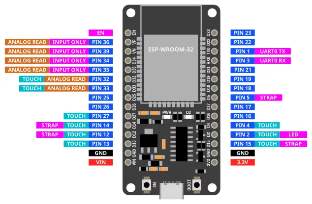
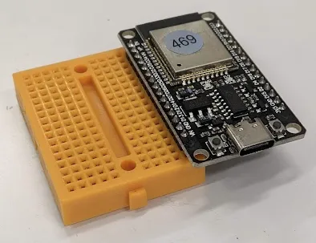
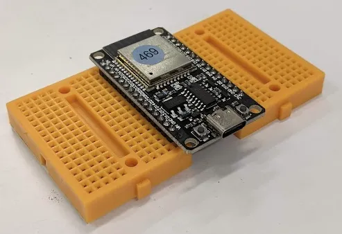
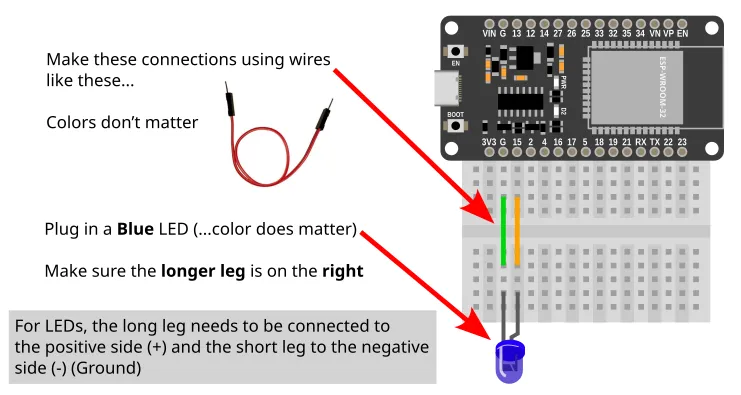
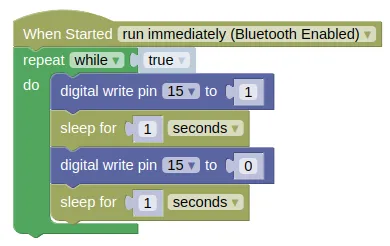
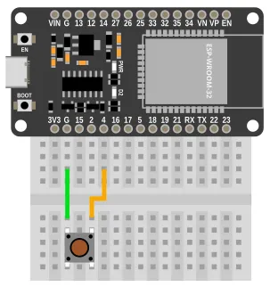
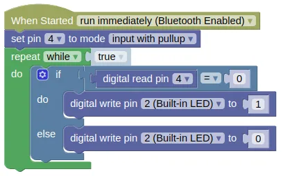
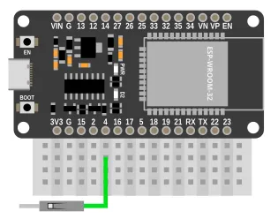
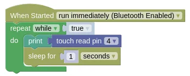
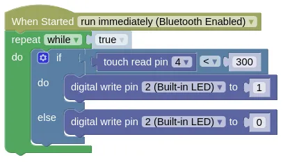

GPIO Pins

Most of the pins on the ESP32 can be used for inputs and outputs. Exceptions are labelled above and described below.
| Label | Description |
|---|---|
| VIN | You can power the ESP32 by supplying 5V to 12V to this pin. If connected to USB, this pin will output 5V. |
| 3V3 | This pins outputs 3.3V. |
| GND | Ground pin. Both GND pins are the same, so you can use either. |
| INPUT ONLY | These pins can only be used as inputs. You cannot write to these pins. They also do not have internal pull-up resistors. |
| ANALOG READ | Only these pins can be used for analog read. |
| TOUCH | Only these pins can be used for touch read. |
| LED | This pin is connected to the onboard blue LED. |
| BOOT | This button is connected to Pin 0. Pin 0 will return a 0 (LOW) when the button is pressed, and 1 (HIGH) when it is not. |
| UART0 RX/TX | These pins are connected to the micropython terminal. You should not use them. |
| STRAP | These pins are generally ok to use, but they may output a signal during boot-up. |
| EN | This pin is connected to the EN (Reset) button. When connected to GND, the ESP32 will reset. |
Breadboard
Breadboards and dupont wires provides an easy way to connect components to your device.

When connecting your ESP32 to a breadboard, it is recommended to plug in only one side to each breadboard. Like this...

If you need to use the other side as well, use a second breadboard...

Digital Output (Write)
Writing a 1 to a pin will set it to HIGH (3.3V).
Writing a 0 to a pin will set it to LOW (0V).
Wiring Example

If you do not have a suitable LED, you can use Pin 2 instead.
Pin 2 is connected to an internal Blue LED.
Code
This example code turns the LED on/off every 1 second.
Blocks

Python
import time
from ioty import pin
while True:
pin.digital_write(15, 1)
time.sleep(1)
pin.digital_write(15, 0)
time.sleep(1)
Digital Input (Read)
Reading a pin will return 1 when it is HIGH (3.3V), and a 0 when it is LOW (0V).
It is often useful to enable the internal pull-up resistor when using a pin as an input; this will ensure that the pin is HIGH when it is not connected to anything, and LOW when connected to GND.
Without a pull-up resistor, the pin will be indetermined when not connected, and may give you random values.
Wiring Example

If you do not have a suitable push button, you can used Pin 0 instead.
Pin 0 is connected to the BOOT button on the ESP32.
Code
This example code turns the built-in LED (Pin 2) on when the button (...connected to Pin 4) is pressed, and off when it is released.
Blocks

To add the else to an if block, use the gear icon.
You can use the same method to add an else if if you require it.
Python
from ioty import pin
pin.set_pin_mode(4, pin.PULL_UP)
while True:
if pin.digital_read(4) == 0:
pin.digital_write(2, 1)
else:
pin.digital_write(2, 0)
Touch Input
Some of the pins on the ESP32 are capable of detecting capacitive touch. This allows you to use these pins as buttons, by simply connecting a wire to the pin and touching the wire.
The values returned by the "touch read pin" block will tend to be high (...100s to over 1000) when there is no contact, and low (...less than 100) when there is contact. The exact value will vary, and you'll need to test to determine it.
Wiring Example

Note that the wire is not connected to anything; we'll be using the wire itself to detect touch. To make a better touch button, you can connect the wire to an uninsulated paper clip or a piece of metal foil.
Code (touch test)
We'll start with a simple code that displays the touch values. This will let us know what values to expect when there is contact and no contact.
Blocks (touch test)

Python (touch test)
import time
from ioty import pin
while True:
print(pin.touch_read(4))
time.sleep(1)
Results (touch test)
Check the monitor for the results. Touch the wire and see how the values change.

In this case, the values are around 500+ when there is no contact, and around 60-140 when there is contact.
Code (touch button)
Based on our test results, we can pick a number between the contact and no-contact values. In this case, 300 would be roughly in the middle between the two ranges, but be warned that you may get a different value from me.
If the touch read value is below 300, we'll consider it to be touched, and turn on the Blue LED. Else, we'll turn the LED off. This is similar to the digital input exercise where we used a button, but here we are using a wire as a button.
Blocks (touch button)

Python (touch button)
import time
from ioty import pin
while True:
if pin.touch_read(4) < 300:
pin.digital_write(2, 1)
else:
pin.digital_write(2, 0)